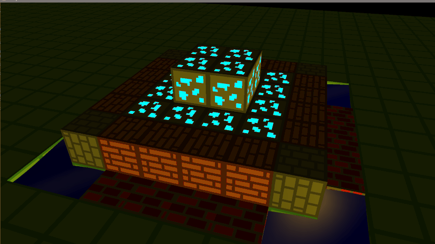

Voxel Game
Put your imagination cap on because this level of originality can be difficult to process. Now, imagine a game where the entire world is made of blocks, and where there is no well defined goal, you just use the blocks to build whatever you want.
VIEW PROJECT